| Up | Next | Prev | PrevTail | Tail |
A very powerful feature of REDUCE is the ease with which matrix calculations can be performed. This package extends the available matrix feature to enable calculations with sparse matrices. This package also provides a selection of functions that are useful in the world of linear algebra with respect to sparse matrices.
The package is loaded by: load_package sparse;
To extend the the syntax to this class of calculations we need to add an expression type sparse.
An identifier may be declared a sparse variable by the declaration SPARSE. The size of the sparse matrix must be declared explicitly in the matrix declaration. For example,
declares AA to be a 10 x 1 (column) sparse matrix and Y to be a 200 x 200 sparse matrix. The declaration SPARSE is similar to the declaration MATRIX. Once a symbol is declared to name a sparse matrix, it can not also be used to name an array, operator, procedure, or used as an ordinary variable. For more information see the Matrix Variables section (14.2).
Once a matix has been declared a sparse matrix all elements of the matrix are initialized to 0. Thus when a sparse matrix is initially referred to the message
is returned. When printing out a matrix only the non-zero elements are printed. This is due to the fact that only the non-zero elements of the matrix are stored. To assign the elements of the declared matrix we use the following syntax. Assuming AA and BB have been declared as spasre matrices, we simply write,
etc. This then sets the element in the first row and first column to 10, or the element in the 100th row and 150th column to a.
Once an element of a sparse matrix has been assingned, it may be referred to in standard array element notation. Thus aa(2,1) refers to the element in the second row and first column of the sparse matrix AA.
These follow the normal rules of matrix algebra. Sums and products must be of compatible size; otherwise an error will result during evaluation. Similarly, only square matrices may be raised to a power. A negative power is computed as the inverse of the matrix raised to the corresponding positive power. For more information and the syntax for matrix algebra see the Matrix Expressions section (14.3).
The operators in the Sparse Matix Package are the same as those in the Matrix Packge with the exception that the NULLSPACE operator is not defined. See section Operators with Matrix Arguments (14.4) for more details.
In the examples the matrix 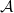 will be
= 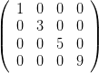
This package is an extension of the Linear Algebra Package for REDUCE described in section 16.37. These functions are described alphabetically in section 16.61.6. They can be classified into four sections(n.b: the numbers after the dots signify the function label in section 6).
| spadd_columns | … | 16.61.6.1 | spadd_rows | … | 16.61.6.2 |
| spadd_to_columns | … | 16.61.6.3 | spadd_to_rows | … | 16.61.6.4 |
| spaugment_columns | … | 16.61.6.5 | spchar_poly | … | 16.61.6.9 |
| spcol_dim | … | 16.61.6.12 | spcopy_into | … | 16.61.6.14 |
| spdiagonal | … | 16.61.6.15 | spextend | … | 16.61.6.16 |
| spfind_companion | … | 16.61.6.17 | spget_columns | … | 16.61.6.18 |
| spget_rows | … | 16.61.6.19 | sphermitian_tp | … | 16.61.6.21 |
| spmatrix_augment | … | 16.61.6.27 | spmatrix_stack | … | 16.61.6.29 |
| spminor | … | 16.61.6.30 | spmult_columns | … | 16.61.6.31 |
| spmult_rows | … | 16.61.6.32 | sppivot | … | 16.61.6.33 |
| spremove_columns | … | 16.61.6.35 | spremove_rows | … | 16.61.6.36 |
| sprow_dim | … | 16.61.6.37 | sprows_pivot | … | 16.61.6.38 |
| spstack_rows | … | 16.61.6.41 | spsub_matrix | … | 16.61.6.42 |
| spswap_columns | … | 16.61.6.44 | spswap_entries | … | 16.61.6.45 |
| spswap_rows | … | 16.61.6.46 |
Functions that create sparse matrices.
| spband_matrix | … | 16.61.6.6 | spblock_matrix | … | 16.61.6.7 |
| spchar_matrix | … | 16.61.6.11 | spcoeff_matrix | … | 16.61.6.11 |
| spcompanion | … | 16.61.6.13 | sphessian | … | 16.61.6.22 |
| spjacobian | … | 16.61.6.23 | spjordan_block | … | 16.61.6.24 |
| spmake_identity | … | 16.61.6.26 |
| spchar_poly | … | 16.61.6.9 | spcholesky | … | 16.61.6.10 |
| spgram_schmidt | … | 16.61.6.20 | splu_decom | … | 16.61.6.25 |
| sppseudo_inverse | … | 16.61.6.34 | spsvd | … | 16.61.6.43 |
| matrixp | … | 16.61.6.28 | sparsematp | … | 16.61.6.39 |
| squarep | … | 16.61.6.40 | symmetricp | … | 16.61.6.47 |
In the examples the matrix will be
= 
Unfortunately, due to restrictions of size, it is not practical to use “large” sparse matrices in the examples. As a result the examples shown may appear trivial, but they give an idea of how the functions work.
Throughout 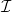 is used to indicate the identity matrix and T to indicate the transpose of the matrix .
| :- | a sparse matrix. | |
| c1,c2 | :- | positive integers. |
| expr | :- | a scalar expression. |
| spadd_columns(, 1, 2,x) = 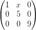 | |||||||
| spadd_rows(, 2, 3, 5) = 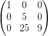 |
See: spadd_columns.
| :- | a sparse matrix. | |
| column_list | :- | a positive integer or a list of positive integers. |
| expr | :- | a scalar expression. |
spadd_to_rows performs the equivalent task on the rows of .
| spadd_to_columns(,{1, 2}, 10) = 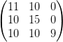 | |||||||
| spadd_to_rows(, 2,-x) = 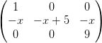 |
See: spadd_to_columns.
| :- | a sparse matrix. | |
| column_list | :- | either a positive integer or a list of positive integers. |
spstack_rows performs the same task on rows of .
| spaugment_columns(,{1, 2}) = 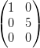 | |||||||
| spstack_rows(,{1, 3}) = 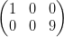 |
| expr_list | :- | either a single scalar expression or a list of an odd number of scalar expressions. |
| square_size | :- | a positive integer. |
spband_matrix({x,y,z}, 6) = 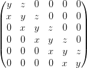
| r,c | :- | positive integers. |
| matrix_list | :- | a list of matrices of either sparse or matrix type. |
| 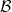 = 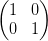, = , = 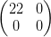 | |||||||
| spblock_matrix(2, 3,{,,,,,}) = 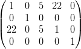 |
| :- | a square sparse matrix. | |
| λ | :- | a symbol or algebraic expression. |
This is = λ *-.
spchar_matrix(,x) = 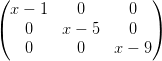
| :- | a sparse square matrix. | |
| λ | :- | a symbol or algebraic expression. |
This is the determinant of λ *-.
| :- | a positive definite sparse matrix containing numeric entries. |
It returns {, } where is a lower matrix, is an upper matrix,
} where is a lower matrix, is an upper matrix,
= , and = T .
| = 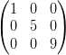 | |||||||
| cholesky() = 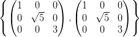 |
| lin_eqn1,lin_eqn2, …,lin_eqnn | :- | linear equations. Can be of the form equation = number or just equation which is equivalent to equation = 0. |
It returns {,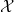,} such that = .
| spcoeff_matrix({y - 20 * w = 10,y - z = 20,y + 4 + 3 * z,w + x + 50}) = | |||||||
| 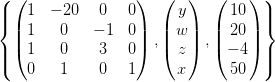 |
| :- | a sparse matrix. |
| poly | :- | a monic univariate polynomial in x. |
| x | :- | the variable. |
This is the square matrix of dimension n, where n is the degree of poly w.r.t. x. The entries of are: (i,n) = -coeffn(poly,x,i - 1) for i = 1…n, (i,i - 1) = 1 for i = 2…n and the rest are 0.
spcompanion(x4 + 17 * x3 - 9 * x2 + 11,x) = 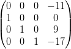
| , | :- | matrices of type sparse or matrix. |
| r,c | :- | positive integers. |
| 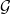 = 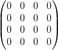 | |||||||
| spcopy_into(,, 1, 2) = 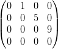 |
| mat1,mat2, …,matn | :- | each can be either a scalar expr or a square matrix of sparse or matrix type. |
| 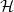 = 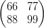 | |||||||
| spdiagonal({,x,}) = 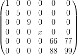 |
| :- | a sparse matrix. | |
| r,c | :- | positive integers. |
| expr | :- | algebraic expression or symbol. |
spextend(, 1, 2, 0) = 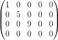
| :- | a sparse matrix. | |
| x | :- | the variable. |
| = 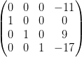 | |||||||
| spfind_companion(,x) = x4 + 17 * x3 - 9 * x2 + 11 |
| :- | a sparse matrix. | |
| c | :- | either a positive integer or a list of positive integers. |
spget_rows performs the same task on the rows of .
| spget_columns(,{1, 3}) = 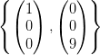 | |||||||||||
| spget_rows(, 2) | = | 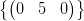 |
See: spget_columns.
| vec1,vec2, …,vecn | :- | linearly independent vectors. Each vector must be written as a list of predefined sparse (column) matrices, eg: sparse a(4,1);, a(1,1):=1; |
It returns a list of orthogonal normalised vectors.
spgram_schmidt({{a},{b},{c},{d}}) =
{{1,0,0,0},{0,1,0,0},{0,0,1,0},{0,0,0,1}}
| :- | a sparse matrix. |
| 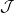 = 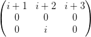 | |||||||
| sphermitian_tp( ) = 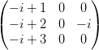 |
| expr | :- | a scalar expression. |
| variable_list | :- | either a single variable or a list of variables. |
sphessian(x * y * z + x2,{w,x,y,z}) = 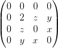
| expr_list | :- | either a single algebraic expression or a list of algebraic expressions. |
| variable_list | :- | either a single variable or a list of variables. |
| spjacobian({x4,x * y2,x * y * z3},{w,x,y,z}) = | |||||||
| 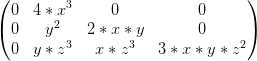 |
| expr | :- | an algebraic expression or symbol. |
| square_size | :- | a positive integer. |
spjordan_block(x,5) = 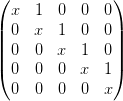
| :- | a sparse matrix containing either numeric entries or imaginary entries with numeric coefficients. |
}
where is a lower diagonal matrix, an upper diagonal matrix and
= .
Caution: The algorithm used can swap the rows of during the calculation.
This means that does not equal but a row equivalent of it. Due to this,
splu_decom returns {,,vec}. The call spconvert(,vec)
will return the sparse matrix that has been decomposed, ie: =
spconvert(,vec).
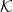 = 
| lu := splu_decom() = | 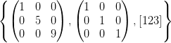 |
| first lu * second lu = 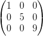 | ||||||||||
| convert(,third lu) | = 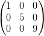 |
| square_size | :- | a positive integer. |
spmake_identity(4) = 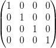
| mat1,mat2, …,matn | :- | matrices. |
spmatrix_stack joins the matrices in matrix_list together vertically.
| spmatrix_augment({,}) = 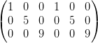 | |||||||||||
| spmatrix_stack({,}) | = | 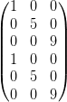 |
| test_input | :- | anything you like. |
matrixp(doodlesackbanana) = nil
See: spmatrix_augment.
| :- | a sparse matrix. | |
| r,c | :- | positive integers. |
spminor(, 1, 3) = 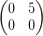
| :- | a sparse matrix. | |
| column_list | :- | a positive integer or a list of positive integers. |
| expr | :- | an algebraic expression. |
spmult_rows performs the same task on the rows of .
| spmult_columns(,{1, 3},x) = 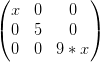 | |||||||
| spmult_rows(, 2, 10) = 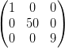 |
See: spmult_columns.
| :- | a sparse matrix. | |
| r,c | :- | positive integers such that (r,c) neq 0. |
To do this, multiples of the r’th row are added to every other row in the matrix.
This means that the c’th column will be 0 except for the (r,c)’th entry.
| :- | a sparse matrix containing only real numeric entries. |
Given the singular value decomposition of , i.e: = Σ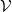T , then the
pseudo inverse † is defined by † = Σ†T . For the diagonal matrix Σ,
the pseudoinverse Σ† is computed by taking the reciprocal of only the
nonzero diagonal elements.
If is square and non-singular, then † = . In general, however, † = , and †† = †.
Perhaps more importantly, † solves the following least-squares problem: given a rectangular matrix and a vector b, find the x minimizing ∥x - b∥2, and which, in addition, has minimum ℓ2 (euclidean) Norm, ∥x∥2. This x is †b.
| 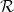 = 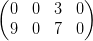 | |||||||
| sppseudo_inverse() = 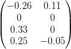 |
| :- | a sparse matrix. | |
| column_list | :- | either a positive integer or a list of positive integers. |
spremove_rows performs the same task on the rows of .
| spremove_columns(, 2) = | |||||||
spremove_rows(,{1, 3}) =  |
See: spremove_columns.
See: spcolumn_dim.
| :- | a sparse matrix. | |
| r,c | :- | positive integers such that (r,c) neq 0. |
| row_list | :- | positive integer or a list of positive integers. |
| :- | a matrix. |
| := mat((1,2,3),(4,5,6),(7,8,9)); | |||||||
| sparsematp() = t | |||||||
| sparsematp() = nil |
| :- | a matrix. |
| = | |||||||
| squarep() = t | |||||||
| squarep() = nil |
See: spaugment_columns.
| :- | a sparse matrix. | |
| row_list, column_list | :- | either a positive integer or a list of positive integers. |
spsub_matrix(,{1, 3},{2, 3}) =
| :- | a sparse matrix containing only real numeric entries. |
If A is an m×n real matrix of (column) rank r, svd returns the 3-element
list {, Σ,} where = ΣT .
Let k = min(m,n). Then U is m × k, V is n × k, and and Σ = diag(σ1,…,σk), where σi ≥ 0 are the singular values of ; only r of these are non-zero. The singular values are the non-negative square roots of the eigenvalues of T .
and are such that T = T = T =
k.
Note: there are a number of different definitions of SVD in the literature, in some of which Σ is square and U and V rectangular, as here, but in others U and V are square, and Σ is rectangular.
| = | |||||||
svd() =
 |
| :- | a sparse matrix. | |
| c1,c1 | :- | positive integers. |
spswap_rows performs the same task on 2 rows of .
spswap_columns(, 2, 3) =
| :- | a sparse matrix. | |
| r1,c1,r2,c2 | :- | positive integers. |
spswap_entries(,{1, 1},{3, 3}) =
See: spswap_columns.
| :- | a matrix. |
| = | |||||||
| symmetricp() = nil | |||||||
| symmetricp() = t |
By turning the fast_la switch on, the speed of the following functions will be increased:
| spadd_columns | spadd_rows | spaugment_columns | spcol_dim |
| spcopy_into | spmake_identity | spmatrix_augment | spmatrix_stack |
| spminor | spmult_column | spmult_row | sppivot |
| spremove_columns | spremove_rows | sprows_pivot | squarep |
| spstack_rows | spsub_matrix | spswap_columns | spswap_entries |
| spswap_rows | symmetricp |
The increase in speed will be insignificant unless you are making a significant number(i.e: thousands) of calls. When using this switch, error checking is minimised. This means that illegal input may give strange error messages. Beware.
This package is an extention of the code from the Linear Algebra Package for REDUCE by Matt Rebbeck (cf. section 16.37).
The algorithms for spcholesky, splu_decom, and spsvd are taken from the book Linear Algebra - J.H. Wilkinson & C. Reinsch[3].
The spgram_schmidt code comes from Karin Gatermann’s Symmetry package[4] for REDUCE.
[1] Matt Rebbeck: A Linear Algebra Package for REDUCE, ZIB , Berlin. (1994)
[2] Anthony C. Hearn: REDUCE User’s Manual 3.6. RAND (1995)
[3] J. H. Wilkinson & C. Reinsch: Linear Algebra (volume II). Springer-Verlag (1971)
[4] Karin Gatermann: Symmetry: A REDUCE package for the computation of linear representations of groups. ZIB, Berlin. (1992)
| Up | Next | Prev | PrevTail | Front |